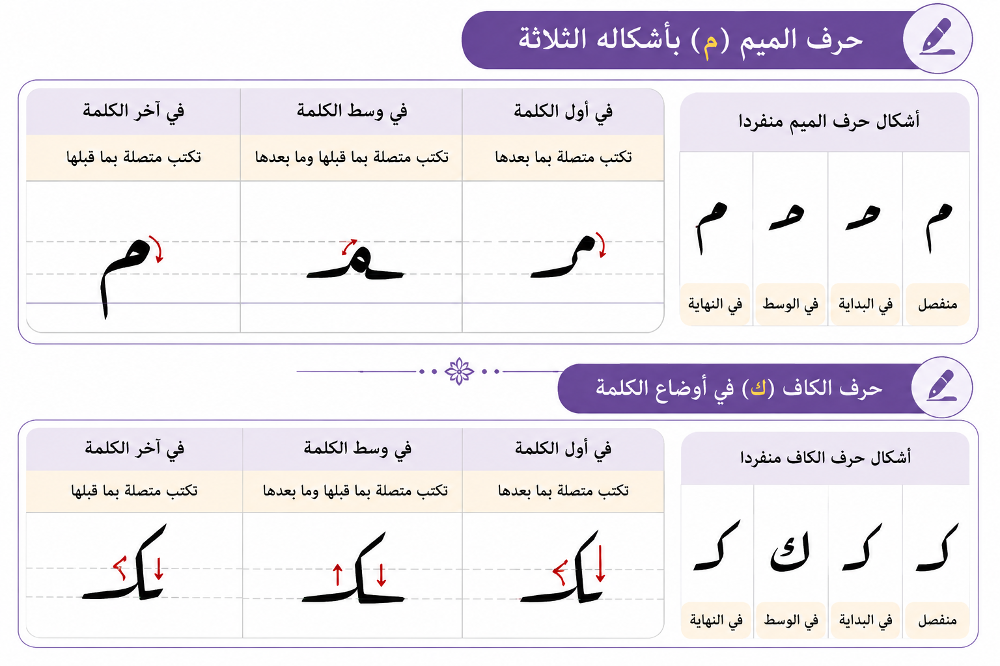

⭐ مميزات خط الرقعة
- خط سريع وسهل في الكتابة.
- حروفه واضحة وقليلة الزخرفة.
- يُستخدم كثيرًا في الكتابة اليومية.
- يعتمد على البساطة والاختصار.
- تُكتب معظم حروفه على السطر.
✍️ مسكة القلم
- أمسك القلم بين الإبهام والسبابة.
- ضع الإصبع الوسطى أسفل القلم لتثبيته.
- لا تضغط على القلم بقوة أثناء الكتابة.
- اجعل القلم مائلًا قليلًا نحو الكتف.
- حرّك اليد بهدوء ومرونة.
🪑 الجلسة الصحيحة
- اجلس وظهرك مستقيم.
- ضع القدمين على الأرض بصورة مريحة.
- اجعل الدفتر أمامك ومائلًا قليلًا.
- اترك مسافة مناسبة بين العينين والدفتر.
- ثبّت الورقة باليد الأخرى.
🔤 قواعد حرفي الكاف والميم
أشكال حرفي الكاف والميم

يختلف شكل حرفي الكاف والميم بحسب موقع كل حرف في الكلمة، فقد يأتي الحرف في أول الكلمة، أو وسطها، أو آخرها، أو منفردًا.
حرف الكاف
- يختلف شكل الكاف بحسب موقعه في الكلمة.
- قد يأتي جزء من حرف الكاف فوق السطر.
- يُراعى وضوح رأس الكاف.
- يُكتب الحرف بخفة ومن دون ضغط قوي.
- يتصل الكاف بما بعده في أول الكلمة ووسطها.
- يُراعى تناسق حجم الكاف مع بقية حروف الكلمة.
حرف الميم
- يختلف شكل الميم بحسب موقعه في الكلمة.
- يكون رأس الميم صغيرًا وواضحًا.
- تُكتب الميم في أول الكلمة متصلة بالحرف الذي بعدها.
- تُكتب الميم في وسط الكلمة متصلة بما قبلها وما بعدها.
- قد ينزل جزء من الميم في آخر الكلمة تحت السطر.
- تُكتب الميم بحركة انسيابية ومن دون مبالغة في حجمها.
🌟 نصائح لتحسين الخط
- تدرب على أشكال الكاف والميم واحدًا بعد الآخر.
- ابدأ بالكتابة ببطء ثم زد السرعة تدريجيًا.
- راقب حجم الحروف والمسافات بينها.
- التزم بالسطر أثناء الكتابة.
- كرر كتابة الحرفين في أول الكلمة ووسطها وآخرها.
- قارن كتابتك بالنموذج الصحيح.
- لا تستعجل؛ فجمال الخط يحتاج إلى تدريب مستمر.